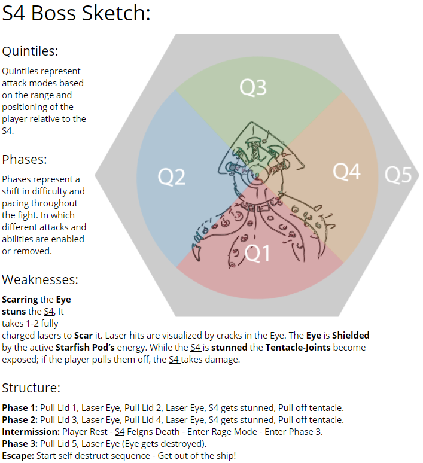

Ever since Celestialpod was teased to the public back in November, there has always been this idea of a final boss fight.
(You can skip to 1:53 in the video to see the boss concept)
It’s really exciting, but at the same time, being first time boss developers, the potential and difficulty of this ‘epic’ task is gigantic compared to (probably) everything the team has done before. That being said, as this upcoming week is the first official week of ‘production’ as we are given the greenlight, I thought I would talk about some of the challenges and difficulties of designing a boss for the first time.
Since we already had some concept art, the first thing we did was brainstorm a bunch of ideas about how the player might kill this gigantic robot squid. What we came up with we feel culminates the essence of the game, maneuvering around obstacles, formulating a plan, and then blowing things up.
To put it simply, and to help us, and our team, tackle the mechanics we have chosen, we broke the squid down into 3 phases, but I’m getting ahead of myself; before we knew how the enemy was going to attack, we needed to know how the player would kill it. What we decided on was giving the squid a few points of weakness: the eye, the pods, and the tentacles. Each of these serves a purpose in the fight, for instance, the eye is the main source of power, to defeat the squid you will have to destroy the eye, the only problem is it’s shielded by 5 Starfish Pods that render the eye invulnerable. The pods are positioned on top of the squid, so that the player has to maneuver around the tentacles attacks in order to deactivate the shields around the eye.
With this in mind, we started to develop a model of how the boss would be structured, as well as it’s attacks. The boss wants you to be below it at all times, going from the sketch, we broke it up into 4 quadrants (we then added a fifth, which technically doesn’t make them quadrants anymore, but we needed a representation of an out of range behavior). Basically, the boss will try to keep the player in Q1 where it can easily deal some damage to the player. The rest of the quadrants provide similar behaviors, but we set them up to provide a language for talking about attacks. For instance, the attack “Tentacle Swoop” reaches up into Q2 and Q4 and pushes players downward into Q1.
Now this is all great, we have a language, we know how the boss theoretically works, but something was still missing: beats! We looked at a bunch of different boss battles, and we found that they all followed some formula of building suspense, increasing the challenge, letting the player rest, and then turning it up to 11, before the narrative crescendo. For us, this meant the battle and everything leading up to the boss was a story. The story outside of the boss is a blog post for another time, but for the boss, we came up with disarming attack-tentacles, saving your starfish friends, and blowing up the eye, only to find an angrier, deadlier, robot squid malfunctioning in order to destroy you.
This was the initial design we decided on, and I can’t wait to see how it changes, but I think for the huge task we started on, we have significantly made it easier for our team to tackle this epic task.
Thanks for reading! Connect with us on Twitter, Facebook, or YouTube. To make sure you stay up to date, sign up for our email list!